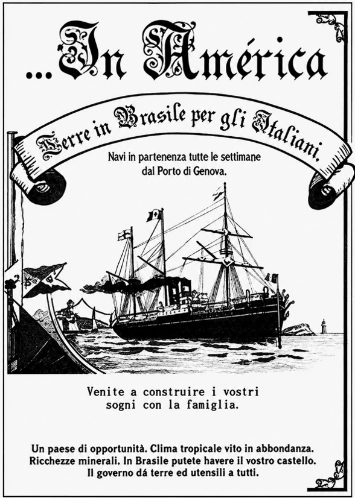

Leia com atenção as três fontes a seguir e responda às cinco questões. Clique em uma questão para ver a resposta.

Tragam ferramentas para a colônia: dois podões grandes, de cabo de ferro, quatro machados [...] e as facas de ponta. Tragam videiras de uvas negrara, xebido, [...] e todas as que quiserem. [...] Para a família tragam os seguintes objetos: todo o material de cozinha: o caldeirão de lavar roupa, o panelão [...] onde se fazia a polenta, a máquina de fazer macarrão, os lampiões. Se for possível, tragam também [...] todos os copos, garrafas, tigelas e pratos [...] Você, pai, traga todos os instrumentos de carpintaria e, se puder, compre também um serrote de fazer tábuas.
ALVIM, Zuleika. Imigrantes: a vida privada dos pobres no campo. In: NOVAIS, Fernando; SEVCENKO, Nicolau (Org.). História da vida privada no Brasil. São Paulo: Companhia das Letras, 1998. v. 3, p. 247-248.
Queridos pais, [...] Eu parti de Santa Rita, porque trabalhava com um patrão que não era bom... Parti daquele lugar feio para chegar em outro pior. Agora estou a serviço de outro dono: tenho que trabalhar junto com os negros, levando pesos sobre os ombros, subindo e descendo os montes como um burro. Começo a trabalhar de manhã ainda com as estrelas no céu e, sempre com as estrelas no céu, voltamos para casa à noite. Comemos: de manhã, feijão... ao meio-dia, feijão... de noite, feijão. A aldeia é muito longe... um dia de caminhada; e os preços da comida são muito altos. [...] Tudo é caro; pelo que concerne os animais... existem de todas as variedades; o bicho-do-pé é como as formigas na Itália. Assim, se existe alguém que quer vir para a América falem para ele que fique na Itália. Eu, daqui a um ano, se estou bem volto para casa... Só me falta cumprimentar a todos vocês... pai, mãe, irmãos, parentes, amigos, adeus.
BIGAZZI, Anna Rosa C. Italianos: história e memória de uma comunidade. São Paulo: Companhia Editora Nacional, 2006. p. 183-184.